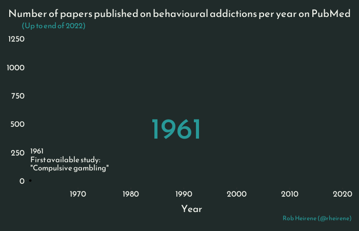
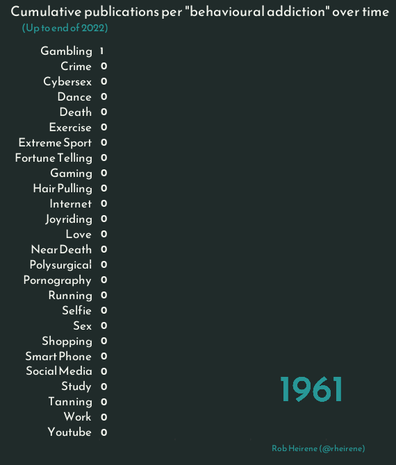

Today we’re going to talk about behavioural addictions and take a high-level look at the research that’s been done in this field. We’ll hopefully achieve the following this session:
Part 1: We’ll briefly chat about behavioural addictions as a group then you’ll read the introductory text below.
Part 2: We’ll look at some outcomes from one of my ongoing review studies and discuss these as a group.
Part 3: In groups of at least 2, you’ll pick one of the addictions discussed in Part 2 and find some research on it. The goal of this activity is to find evidence that supports the view that people can indeed be addicted to the particular behaviour in question (e.g., gambling, gaming etc). What evidence do you find? Do you think that
Part 1
The phrase “behavioural addiction” starts to appear in academic articles in the late 80s and early 90s. Soon after, Jaffe (1990) made the argument that “addiction” was was being used too liberally—it was being applied to too many non-drug-related behaviours and we were at risk of “trivializing dependence”.
As we’ll see, these concerns didn’t do much to stem the expansion of addiction’s definition. Since the 1990s the net of addiction has been cast wider and wider, capturing more and more repetitive and/or compulsive behaviour patterns.
Fears that the term will lose all meaning remain heightened in academic and medical circles. And for good reason — individuals who experience addictions to opioid-based drugs or alcohol can suffer serious, life-threatening harm and truly awful withdrawal episodes. Assigning the same label to describe their experience and someone who has a largely inconsequential difficulty controlling their spending or screen use could indeed trivialise the former’s condition.
Such concerns are not unique to addiction. “Psychiatrization” and “concept creep” have been used to describe the seemingly ever-widening definitions mental health disorders, abuse, and trauma, as well as the “medicalisation” of these in the form of over-diagnosis and treatment (Haslam, 2016; Haslam et al., 2021).
But how many behaviours really are being labelled as “addictions” in the peer-reviewed literature? And how many studies are there on these “new” addictions?
These are some of the questions we will look at below in our part 2.
Part 2
Data gathering
For this study, I tried to find every peer-reviewed paper that has ever discussed a behaviour (e.g., gaming, social media use etc.) as a form of addiction. Well, every paper published on the PubMed database. I used some code to find and extract the articles, but that’s not important for this seminar.
Data & code set-up
Code: load packages
# Install and load the groundhog package to ensure consistency of the package versions used here:# install.packages("groundhog") # Installlibrary(groundhog) # Load# List desired packages:packages <-c('readr', # Load dataset from GitHib'RCurl', # Load dataset from GitHib'tidyverse', # Clean, organise, and visualise data'gt', # table data'gtExtras', # Add colours to gt tables'plotly', # Add interactive elements to figures'gganimate', # Make animated plots'transformr', # Needed for certain animations (dumbell lines)'png',# Helps render gganimate plots'gifski', # Helps render gganimate plots'rmarkdown', # Helps render gganimate plots'av', # render gganimate plots as videos'Cairo', # Anti-aliasing for the line plots (smoothing output)'ggtext', # make fancy labels in plots'sysfonts', # Special fonts for figures'showtext', # Special fonts for figures'htmlwidgets', # Make plotly plots HTML format for rendering in Quarto'scico', # Colour palette'sessioninfo') # Detailed session info for reproducibility # Load desired package with versions specific to project start date:groundhog.library(packages, "2023-08-01")
Code: fonts & themes
# Load new font for figures/graphsfont_add_google("Poppins", "Poppins")font_add_google("Reem Kufi", "Reem Kufi")showtext_auto(enable =TRUE) plot_theme <-theme(plot.background =element_rect(fill ="#202B2A", color =NA), # ADDING THIS NA REMOVES BORDER AROUND PLOT ON WEBSITEpanel.background =element_rect(fill ="#202B2A"),text =element_text(family ="Reem Kufi", color ="#F5F7F0"),axis.text =element_text(color ="#F5F7F0", size =13),panel.grid =element_blank(),plot.title =element_text(color ="#F5F7F0", size =16),plot.subtitle =element_text(color ="#50B5C8"),plot.caption =element_text(color ="#50B5C8"))
Code: load dataset
url_behav_addic_data_link <-"https://raw.githubusercontent.com/rheirene/pub-med-scape-behav-addictions/main/Data%20extraction/combined_results_clean.csv"raw_data <-read_csv(url_behav_addic_data_link) %>%as_tibble()str(raw_data)# Despite my best efforts with manual searching, my explorations of this dataset in R revealed that there are a few erratums/corrigendums and one notice of retraction included in the data. Let's remove these before moving forward:filtered_data <- raw_data %>%filter(str_detect(Publication_Type, "Erratum") |str_detect(Publication_Type, "corrigendum") |str_detect(Publication_Type, "Retraction")) %>%distinct(PMID, .keep_all =TRUE)# Let's now remove these pubs and any from 2023 so we have data for all "full" years:data <- raw_data %>%anti_join(filtered_data) %>%filter(Year !="2023") # View(data)
All “addictions” found
So, here’s an overview of all studies found by addiction type (N= number of studies):
Let’s look at how these publications are spread out over time:
Code: Bar chart of total pubs
# Compute some summary values will use in the labels:n_papers_2022<- data %>%distinct(PMID, .keep_all =TRUE) %>%filter(Year ==2022) %>%distinct(PMID) %>%count() %>%pull()n_journals_2022<- data %>%distinct(PMID, .keep_all =TRUE) %>%filter(Year ==2022) %>%distinct(Journal_Title) %>%count() %>%pull()# Prepare data:data_total_per_year_pubs <- data %>%distinct(PMID, .keep_all =TRUE) %>%filter(Year !="2023") %>%group_by(Year) %>%count() %>%ungroup() %>%mutate(first_study_1961_label =case_when(Year >=1961& Year <1980~sprintf("1961 \nFirst available study: \n\"Compulsive gambling\""),TRUE~"")) %>%mutate(gam_1980_label =case_when(Year >=1980& Year <1994~sprintf("1980 \nPathological Gambling added \nto DSM (version III)"),TRUE~"")) %>%mutate(behav_addic_1994_label =case_when(Year >=1994& Year <2004~sprintf("1994 \nFirst mention of \"Behavioural \n addictions\" in the literature"),TRUE~"")) %>%mutate(first_gaming_2004_label =case_when(Year >=2004& Year <2013~sprintf("2004 \nFirst available studies \non gaming addiction"),TRUE~"")) %>%mutate(gam_DSMV_label =case_when(Year >=2013& Year <2020~sprintf("2013 \n\"Gambling disorder\"\nadded in \"addictive \ndisorders\" class in \nDSM-V"),TRUE~"")) %>%mutate(final_year_label =case_when( Year >=2020& Year <2023~sprintf("2022 \n%s studies\n published \nacross %s \njournals", n_papers_2022, n_journals_2022),TRUE~"" )) # Make plot: total_year_gganimate <- data_total_per_year_pubs %>%ggplot(aes(Year, n)) +geom_point() +geom_line(size =1.5, color ="#50B5C8") +# Add year counting labelgeom_text(aes(x =1984, y =370, label =as.factor(Year)), hjust =0, vjust =0, col ="#50B5C8", size =15, family ="Reem Kufi") +# Add 1961 first study labelgeom_text(aes(x =1961, y =90, label = first_study_1961_label), hjust =0, vjust =0, alpha =1, col ="#F5F7F0", size =4, family ="Reem Kufi") +# Add 1980 gambling labelgeom_text(aes(x =1970, y =100, label = gam_1980_label), hjust =0, vjust =0, alpha =1, col ="#F5F7F0", size =4, family ="Reem Kufi") +# Add 1994 behavioural addictions labelgeom_text(aes(x =1984, y =110, label = behav_addic_1994_label), hjust =0, vjust =0, alpha =1, col ="#F5F7F0", size =4, family ="Reem Kufi") +# Add 2004 gaming addiction labelgeom_text(aes(x =1994, y =150, label = first_gaming_2004_label), hjust =0, vjust =0, alpha =1, col ="#F5F7F0", size =4, family ="Reem Kufi") +# Add 2013 gambling labelgeom_text(aes(x =2002, y =290, label = gam_DSMV_label), hjust =0, vjust =0, alpha =1, col ="#F5F7F0", size =4, family ="Reem Kufi") +# Add final year labelgeom_text(aes(x =2013, y =770, label = final_year_label), hjust =0, vjust =0, alpha =1, col ="#F5F7F0", size =4, family ="Reem Kufi") +# Define theme elements plot_theme +theme(plot.background =element_rect(fill ="#202B2A", color =NA), # ADDING THIS NA REMOVES BORDER AROUND PLOT ON WEBSITEpanel.background =element_rect(fill ="#202B2A"),text =element_text(family ="Reem Kufi", color ="#F5F7F0"),axis.text =element_text(color ="#F5F7F0", size =12),panel.grid =element_blank(),plot.margin =margin(20, 5, 20, 20),axis.title.y =element_blank(), axis.title.x =element_text(margin =margin(t =18), size =14),plot.title =element_text(color ="#F5F7F0", size =15, margin =margin(b =10), hjust =1.5),plot.subtitle =element_text(hjust =-0.02)# panel.border = element_rect(color = "#202B2A") ) +scale_x_continuous(breaks =seq(1960, 2020, by =10), expand =c(.01, 0)) +# Define x-axis dates & Make the plot fill the available space betterscale_y_continuous(limits =c(0, 1250), breaks =seq(0, 1250, by =250)) +# Define y-axis labels# Add titles and labelslabs(title ="Number of papers published on behavioural addictions per year on PubMed", # Add headersubtitle ="(Up to end of 2022)",x ="Year",caption ="Rob Heirene (@rheirene)" ) +theme(plot.caption =element_text(hjust = .98,vjust = .98)) +# Add gganimate animationtransition_reveal(Year) # view_follow()# Animate and present plot:# animate(# total_year_gganimate,# width = 700, height = 420, # rewind = FALSE, # type = "cairo",# duration = 14,# fps = 12,# renderer = av_renderer()# )# Animate plot in GIF format:animate(total_year_gganimate,width =700, height =450,end_pause =30,type ="cairo",duration =21)

Now let’s look publication rates for each “addiction” over time:
Code: Bar chart race (publications by addiction)
# Get palette colorsnum_labels <-length(unique(data$Label))palette_colors <-rev(scico(n = num_labels, palette ='imola'))# levels(as.factor(data$Label)) # Check out all behavioural addictions in the dataset# Prepare the data:data_bar_chart_race_pubs_year<- data %>%# Remove generic behav addictions category:filter(Label !="behavioural_addictions") %>%# Tidy the behavioural addiction labels:mutate(Label =str_replace_all(Label, "_", " ") %>%str_to_title()) %>%# Aggregate the data by behavioural addiction type:group_by(Year, Label) %>%count() %>%ungroup() %>%group_by(Label) %>%mutate(Accumulated_Papers =cumsum(n)) %>%# Produce a variable that is the cumulative sum of studies for each disorder each year (this is what we will be plotting)# This next part is a bit clunky, but we need to find a way to have a value for every addiction for every year, even though we don't have one currently. We can do this by pivoting wider so we create a column for each year then go from thereungroup() %>%mutate(percent =round(n/sum(n)*100, 2)) %>%# just for interest# mutate(Label = factor(Label, levels = unique(Label))) %>% # order the Label by descending nmutate(Year =paste0("label_", Year)) %>%# so we can select columns later on easilyselect(-n,-percent) %>%# Remove these columns otherwise it throws off the pivot_longer below and makes multiple rows per datepivot_wider(names_from = Year, values_from = Accumulated_Papers) %>%mutate(label_1961 =case_when(label_1961 ==1~1,is.na(label_1961) ~0)) %>%# This sets the first year to 0 unless there is a paper published, allowing us to use this as a starting point for imputing valuespivot_longer(cols =starts_with("label_"), names_to ="Year", values_to ="Accumulated_Papers") %>%# now put back into longer formatgroup_by(Label) %>%fill(Accumulated_Papers, .direction ="down") %>%# Impute missing values from one above, by addiction typemutate(Year =str_replace(Year, "label_", "")) %>%# remove label from the year valuesungroup() %>%group_by(Year) %>%# Provide a rank for each addiction that ensures no overlap:arrange(Year, desc(Accumulated_Papers), Label) %>%mutate(Rank =row_number(),Rank =ifelse(duplicated(Accumulated_Papers, fromLast =TRUE), Rank -0.0001, Rank) ) %>%ungroup() # View(data_bar_chart_race_pubs_year) # Check everything looks okay before proceeding!# Produce plot:bar_chart_race_pubs_year <- data_bar_chart_race_pubs_year %>%ggplot(aes(x =-Rank, y = Accumulated_Papers, fill = Label)) +geom_tile(aes(y = Accumulated_Papers/2, height = Accumulated_Papers), width =0.9) +coord_flip(clip ="off", expand =FALSE) +# Flip# Add year counting labelgeom_text(aes(y =2400, x =-24, label =as.factor(Year)), hjust =0, vjust =0, alpha =0.6, col ="#50B5C8", # Alpha not working here for some unknown reason (send help!)size =14, family ="Reem Kufi",inherit.aes =FALSE) +# Adding this didn't fix the alpha issue# Add behavioural addiction labelgeom_text(aes(x =-Rank, y =-100, label = Label),hjust =1, size =4.5, color ="#F5F7F0",family ="Reem Kufi") +# Add value labelgeom_text(aes(y = Accumulated_Papers, label =as.factor(Accumulated_Papers)), # Putting this as a factor is key otherwise it displays decimals to ~10 places at times!hjust =-0.2,color ="#F5F7F0",fontface ="bold", family ="Reem Kufi") +# scale_y_continuous(limits = c(0,3800), breaks = seq(0, 3500, by = 500), expand = c(.01, 0)) + # Define x-axis dates & Make the plot fill the available spacescale_fill_manual(values = palette_colors, guide =FALSE) +theme(legend.position ="none") +theme(plot.background =element_rect(fill ="#202B2A", color =NA), # ADDING THIS NA REMOVES BORDER AROUND PLOT ON WEBSITEpanel.background =element_rect(fill ="#202B2A"),text =element_text(family ="Reem Kufi", color ="#F5F7F0"),axis.text =element_text(color ="#F5F7F0", size =12),panel.grid =element_blank(),plot.margin =margin(10, 60, 20, 130),axis.text.y =element_blank(), axis.text.x =element_blank(), # remove x-axis textaxis.title =element_blank(), # remove x-axis titleplot.title =element_text(color ="#F5F7F0", size =15, margin =margin(b =10), hjust =0.7),plot.subtitle =element_text(color ="#50B5C8", margin =margin(b =17), hjust =-0.4),plot.caption =element_text(color ="#50B5C8", hjust =1.06,vjust =0.2)# axis.text.y = element_text(size = 12, hjust = 1)# panel.border = element_rect(color = "#202B2A") ) +# Add titles and labelslabs(title ="Cumulative publications per \"behavioural addiction\" over time", # Add headersubtitle ="(Up to end of 2022)",caption ="Rob Heirene (@rheirene)" ) +transition_states(Year, wrap =FALSE, # This (with some of the animation arguments) stops it from rewinding at the endtransition_length =5, state_length =1) +enter_grow() +ease_aes('linear')# Animate in video format:# animate(bar_chart_race_pubs_year, # fps = 20, # end_pause = 50,# duration = 30, # rewind = FALSE,# width = 600, height = 700,# type = "cairo",# renderer = av_renderer())# Animate plot in GIF format:animate(bar_chart_race_pubs_year,fps =20,end_pause =70,duration =30,width =570, height =670,type ="cairo")

Let’s try another approach to visualising this data (this plot really doesn’t play well with mobile, so it’s best viewed on a PC/tablet):
Code: Dumbbell plot (publications by addiction)
# Arrange data:dumbbell_plot_data<- data %>%# filter(Year != "2023") %>%filter(Label !="behavioural_addictions") %>%group_by(Label) %>%summarise(min =min(Year), # identify first yearmax =max(Year), # identify last yearmin_papers =sum(Year ==min(Year)), # Count papers for first yearmax_papers =sum(Year ==max(Year)) # Count papers for last year ) %>%arrange(min) %>%pivot_longer(cols =c(min, max),names_to ="Range",values_to ="Year" ) %>%# Compute a single column that contains our n papers for the first and last pub years:mutate(papers_this_year =case_when(Range =="max"~ max_papers, Range =="min"~ min_papers)) %>%select(-min_papers,-max_papers) %>%# Add a value that tells us whether a date is min or max for colouring later:# Tidy the behavioural addiction labels:mutate(Label =str_replace_all(Label, "_", " ") %>%str_to_title())# Order the behavioural addictions based on the first year of publicationlabel_order <- dumbbell_plot_data %>%filter(Range =="min") %>%arrange(Year) %>%pull(Label)# Fix the order:dumbbell_plot_data$Label <-factor(dumbbell_plot_data$Label, levels =rev(label_order))# Create data for every publication year per labelevery_year_data <- data %>%filter(Label !="behavioural_addictions") %>%group_by(Label, Year) %>%summarise(n_papers =n()) %>%ungroup() %>%mutate(Label =str_replace_all(Label, "_", " ") %>%str_to_title())# Plot: dumbbell_plot_first_last <-ggplot() +geom_line(data = dumbbell_plot_data, aes(x= Year, y= Label, text = Label),size =1,colour="#666666") +geom_point(data = every_year_data, aes(x = Year, y = Label, size=sqrt(n_papers), text =paste(Label, "\nYear:", Year, "\nNo. of publications:", n_papers)), color="grey", alpha=0.3) +geom_point(data = dumbbell_plot_data, aes(x = Year, y = Label, color=Range, size=sqrt(papers_this_year), text =paste(Label, "\nYear:", Year, "\nNo. of publications:", papers_this_year))) +scale_size_continuous(guide="none") +scale_color_manual(values =c("min"="#70A377", "max"="#50B5C8"), guide=FALSE) + plot_theme +theme(axis.title =element_blank(),plot.title =element_markdown(margin =margin(b =15, t =40)),plot.caption =element_text(margin =margin(t =10, b =5), hjust = .96)) +labs(title =sprintf("<span style = 'color: #70A377;'>Earliest</span> and <span style = 'color: #50B5C8;'>most recent</span> studies of \"behavioural addictions\" on PubMed"),subtitle ="(Up to end of 2022)",caption ="Rob Heirene (@rheirene)" )# print(dumbbell_plot_first_last)# dumbbell_plot_first_last # View static plot# We're going to turn this into an interactive plot now using ggplotly, but this removes some of our existing theme settings, especially the fonts. The standard way of changing the font in ggplotly doesn't seem to work for me, and it seems like other people having the same issue. I found this workaround online (https://github.com/plotly/plotly.R/issues/2117) which I now use below to load and use the correct font once this becomes a ggplotly:# Get the URL for the "Reem Kufi" font from Google Fonts:reem_kufi_file <- showtextdb::google_fonts("Reem Kufi")$regular_url # Create custom CSS:reem_kufi_css <-paste0("<style type = 'text/css'>","@font-face { ","font-family: 'Reem Kufi'; ", "src: url('", reem_kufi_file, "'); ","}","</style>")# Convert static plot to ggplotly format and adjust theme settings where required: dumbbell_plot_first_last_ggplotly <-ggplotly(dumbbell_plot_first_last,tooltip ='text') %>%hide_legend() %>% plotly::layout(margin =list(t =90), # Increase top marginfont =list(family ="Reem Kufi"),title =list(x =0, y =0.945),hoverlabel =list(font =list(family ="Reem Kufi")))# Add the CSS as a dependency for the plotly plot:dumbbell_plot_first_last_ggplotly$dependencies <-c( dumbbell_plot_first_last_ggplotly$dependencies,list( htmltools::htmlDependency(name ="reem-kufi-font", version ="0", src ="",head = reem_kufi_css)))# Display plot:saveWidget(dumbbell_plot_first_last_ggplotly, 'dumbbell_plot.html')
The size of the dots in the above plot correspond to the number of publications in that year for the addiction. After sorting the visuals with ggplot2, I used the great ggplotly package to make it interactive—hover over any of the dots to see more information about what was going on that year.
Part 3
In groups of at least 2, pick one of the addictions displayed above and find some research on it.
Your goal is to find evidence that supports the view that people can indeed be addicted to the particular behaviour you choose (e.g., gambling, gaming etc).
What evidence do you find? Is there actual empirical data collected or is this just a commentary paper?
How do the authors study the “addiction” and what methods do they used to support the claim that the participants involved are addicted to their behaviour?
Are there any limitations of the research that need to be considered in this context?
Does the study make you more or less convinced that people can be addicted to this behaviour? Why/why not?
References
Expand to see references
Alexander, B. K., & Schweighofer, A. R. F. (1988). Behavioural Addictions. Canadian Journal of Psychology, 29, 151-163.
Grall-Bronnec, M., Bulteau, S., Victorri-Vigneau, C., Bouju, G., & Sauvaget, A. (2015). Fortune telling addiction: Unfortunately a serious topic about a case report. Journal of Behavioral Addictions, 4(1), 27-31. https://doi.org/10.1556/jba.4.2015.1.7